Home ／ 第2回
LESSON 02 ／ 決めるフェーズ
要件定義 ― 作るものを決めて、仕様書と作業の順番にする
～ フォルダを作り、AIと壁打ちし、docs/spec.md と docs/tasks.md をフォルダに残す ～
- Claude デスクトップアプリを使います
- 成果物：docs/spec.md
- 成果物：docs/tasks.md
- まだコードは書きません
01
要件定義とは
要件定義＝作り始める前に「誰が使うか・何を作るか・何を作らないか・どんなデータと画面を持つか」を文章で決めることです。この回で作るのは Web アプリ（＝ブラウザで開いて使うアプリ。ブラウザ＝Safari や Chrome など、Web ページを見るソフト）です。
このゼミではその文章を docs/spec.md（仕様書）として残し、さらに「どの順番で作るか」を docs/tasks.md に残します。
この書き方の意味：docs＝documents（文書）の略で、仕様書などの文書をまとめて入れるフォルダの名前。spec＝specification（仕様）の略。tasks＝作業の一覧。.md＝Markdown という書き方の文章ファイル（「仕様書」の節で説明します）。docs/spec.md は「docs フォルダの中の spec.md というファイル」を表します。
7回で完走できるかどうかは、この回の削り込みでほぼ決まります。
なぜ作り始める前に決めるのか
- Claude Code（＝指示を出すと、PCのファイルを実際に作ったり書き換えたりしてくれるツール）は、指示が曖昧なところを自分で埋めて作ります。決めていない部分は、指示のたびに違う形で作られやすく、前に作ったものが書き換わることがあります
- 作りながら決めると、途中で「やっぱりこの項目も要る」となり、そこまでに保存したデータや画面を作り直すことになります
- 文章になっていれば、作り始めてからは「
docs/spec.mdに従って作って」と一言で指示できます。チャットに毎回同じ説明を貼り直さなくてすみます
この回の流れ（上から順に進めます）
フォルダを作る
アプリ1つにつき1つ
Claude Code で開く
デスクトップアプリから
AI と壁打ち
誰が・何を・どんな機能を
削る・決める
テーマの3条件／MVP（最初に作る最小限の範囲）／型／画面
技術の提案
Claude Code に候補を出させる
仕様書
docs/spec.md
作業の順番
docs/tasks.md
02
最初に、アプリのフォルダを作る
要件定義の前に、アプリ用のフォルダ（＝そのアプリのファイルをすべて入れる入れ物）を1つ作ります。
なぜフォルダから始めるのか
- Claude Code は「開いたフォルダの中」でファイルを作ったり書き換えたりします。フォルダを開かずに始めると、どこにファイルができるか分かりません
- この回で作る仕様書と作業の順番は、このフォルダの中に置きます。自分のアプリを作り始めるとき、Claude Code がその場で読めます
- アプリ1つにつきフォルダ1つにします。分けないと、別のアプリのファイルまで書き換えられることがあります
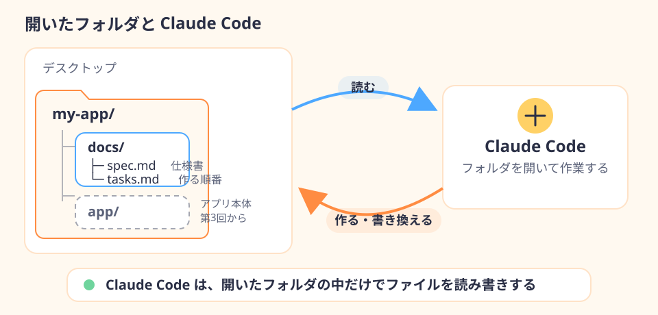
置き場所と名前
| 決めること | このゼミでの決まり | なぜ |
|---|---|---|
| 置き場所 | デスクトップ | いつでも目に入り、Finder／エクスプローラーですぐ見つかるためです |
| 名前 | 半角英数字とハイフンだけ。このページでは例として my-app にしていますが、名前は好きに決めて構いません（例：shokuhi-memo、reading-log） | 日本語やスペースが入った名前は、開発の道具の一部で扱いが難しくなります。トラブルを減らすため、最初から半角英数字にそろえます |
表は横にスクロールできます
なぜ半角英数字とハイフンなのか
- 半角英数字にする理由：Claude Code が裏で使う開発の道具（プログラムを動かすためのソフト群）の多くは英語圏で作られていて、日本語などの全角文字を正しく扱えないものがあります。フォルダ名が読めずにエラー（＝プログラムが処理を続けられなくなったときに出す知らせ）になったり、文字化けしたりします
- スペースを入れない理由：PC への命令文では、スペースは「ここで区切る」という意味に使われます。
my appという名前だとmyとappの2つに分かれて読まれ、フォルダが見つからなくなります - ハイフンを使う理由：単語のつなぎには、どの道具でも安全に使えるハイフン（
-）を使います。アンダースコア（_）でも構いません。記号はこの2つだけにします - 小文字にそろえる理由：大文字と小文字を区別する道具と、しない道具があります。
My-Appとmy-appが別物として扱われる場面があるので、最初から小文字だけにします
C:\Users\（自分のユーザ名） の直下に apps フォルダを作り、その中に my-app を作ります。
デスクトップに作ってしまった場合は、my-app をそこへドラッグして移し、Claude デスクトップアプリで開き直せば大丈夫です。
Mac での作り方
- 1
Finder を開き、左の一覧から「デスクトップ」を選ぶ
Finder＝Mac でファイルやフォルダを見たり動かしたりするソフト。Dock（画面下の帯）の左端にある顔のアイコンです。Windows では「エクスプローラー」が同じ役割です。なぜ：作る場所を先に開いておかないと、別の場所にフォルダができて見失います。
- 2
メニューの「ファイル」→「新規フォルダ」（⇧⌘N）
何もない場所で右クリック →「新規フォルダ」でも同じです。
- 3
できた「名称未設定フォルダ」の名前を
my-appのように打ち直して Enterなぜ：「名称未設定フォルダ」のままだと、あとで増える別のフォルダと区別がつきません。
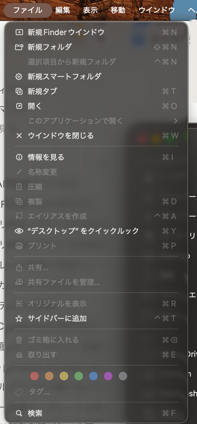
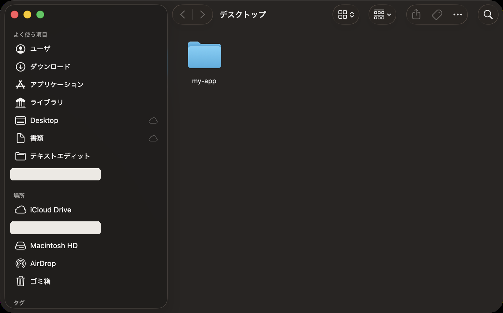
Windows での作り方
- 1
デスクトップの何もない場所で右クリック →「新規作成」→「フォルダー」
- 2
名前を
my-appのように打ち直して Enter
03
Claude デスクトップアプリでフォルダを開く
作ったフォルダを、Claude デスクトップアプリの中の Claude Code で開きます。
</>（Claude Code）が出ている ④ 下の手順でフォルダを開ける。
③ が出ない場合は、契約の種類か、ログインしているアカウントが違います。
- 1
Claude デスクトップアプリを起動し、画面左上の
</>（Claude Code）を押す左の一覧の上にある 「＋ 新規」 を押します。なぜ：新しいセッション（＝1つの会話のまとまり）で始めると、前の会話の内容と混ざりません。
- 2
画面の下にある、いまのフォルダ名が書かれたボタンを押す
最近開いたフォルダの一覧と 「フォルダを開く…」 が出ます。
- 3
「フォルダを開く…」→ デスクトップ →
my-appを選んで「開く」なぜ：ここで選んだフォルダだけが Claude Code の作業対象になります。デスクトップそのものを選ぶと、デスクトップ全体が対象になってしまいます。
- 4
画面の下のボタンが
my-appになっていれば開けています
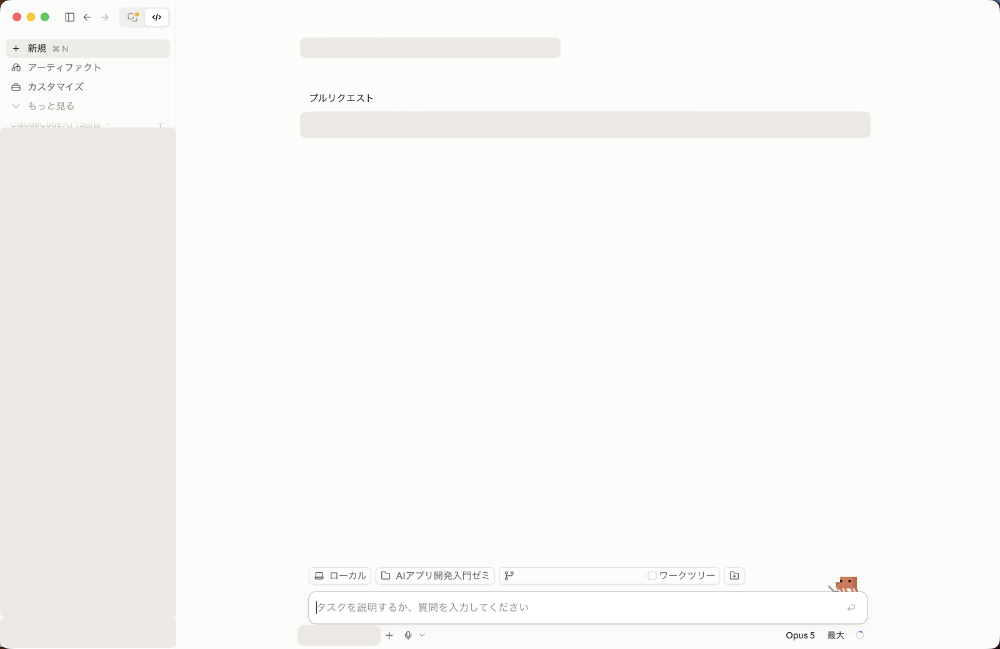
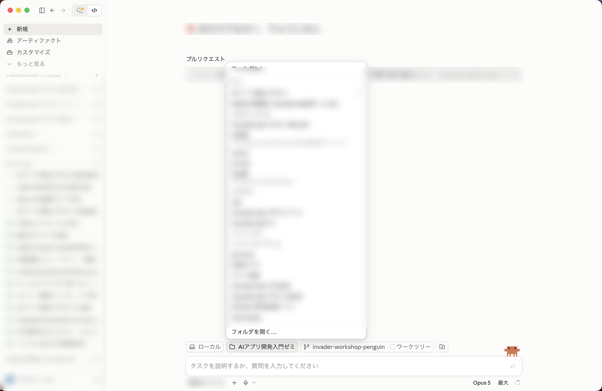
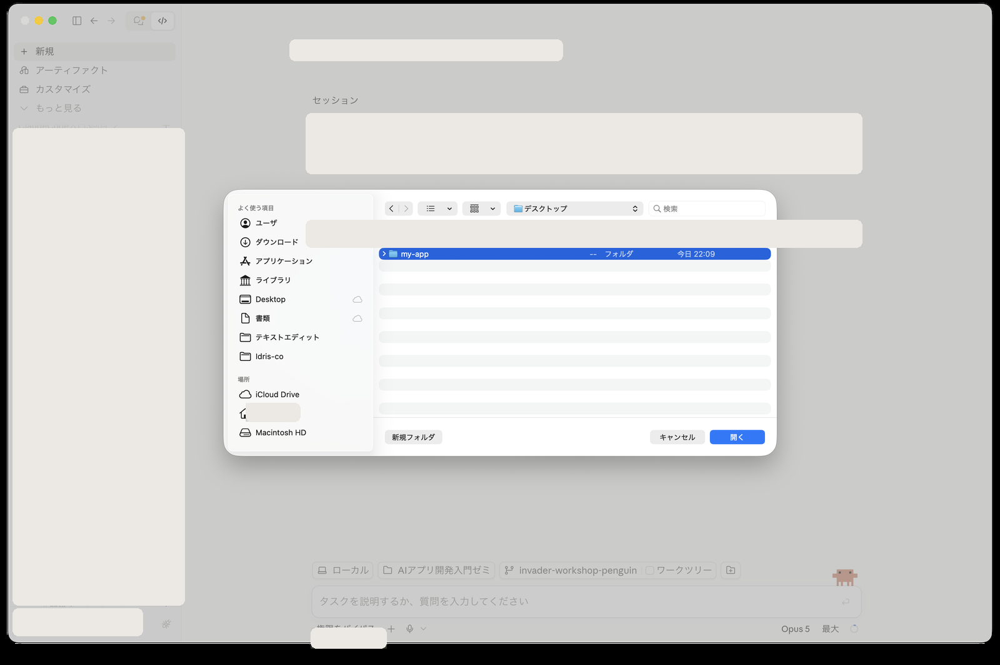
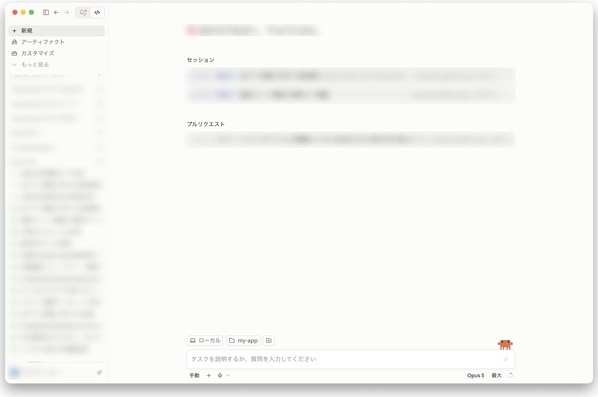
なぜ「下のボタンが my-app か」を毎回見るのか：Claude Code は、ここに出ているフォルダの中でファイルを作ります。別のフォルダのまま指示すると、そちらにファイルができたり、そちらのファイルが書き換えられたりします。
 「このワークスペースを信頼しますか？」と聞かれたら：
ワークスペース＝Claude Code が作業する場所として開いたフォルダのことです。表示されたフォルダの場所が、いま自分で作った
「このワークスペースを信頼しますか？」と聞かれたら：
ワークスペース＝Claude Code が作業する場所として開いたフォルダのことです。表示されたフォルダの場所が、いま自分で作った my-app であることを見てから「信頼」を押してください。
この確認は「そのフォルダの中のファイルを Claude Code が読み書きしてよいか」を聞いています。知らないフォルダなら押さないでください。
入力欄の下に 「手動」 と出ています。これは権限モード（＝Claude Code がファイルの書き換えやコマンドの実行をする前に、確認を求めるかどうかの設定）で、「手動」は、そうした操作の前に確認画面が出る設定です。この回はこのままにします。理由は「仕様書」の節で説明します。表示される名前や選べる設定は、アプリの更新や契約の種類で変わることがあります。
04
要件を噛み砕く：AI と壁打ちする
いきなり仕様書を書かせません。最初は「誰が・何を・どんな機能を」を自分の言葉で書き、それを AI に読ませて質問と提案をもらいます。 このやり取りを壁打ちと呼びます（AI に送る指示の文章をプロンプトと言います）。
まず自分で書く4つ
| 書くこと | 例（食費メモ） | なぜ先に自分で書くのか |
|---|---|---|
| 誰が使うか | 自分だけ。週に何回か、PC のブラウザから | 使う人が決まらないと、機能の要・不要を判断できません |
| どんなアプリか（ひとこと） | 毎日の食費をメモして、月ごとの合計を見る | 一文で言えないものは、AI にも伝わりません |
| 欲しい機能（思いつくもの） | 金額・日付・メモを保存／一覧を新しい順に見る／月の合計 | AI の提案と見比べる土台になります |
| やらないこと | 家族との共有・ログイン・レシート読み取り | 書いておかないと AI が足してきます |
表は横にスクロールできます
次に AI に頼む3つ
- 1
分かりにくいところを質問してもらう（3つまで）
- 2
「このアプリなら、こういう機能はいかがですか」という提案を出してもらう（3〜5個、理由つき）
- 3
提案を「無いと1回も使えない（必須）」と「無くても1回使える（あとまわし）」に仕分けしてもらう
壁打ちの指示の型
（ ）の中を自分のアプリに差し替えて、さっき開いた my-app の入力欄に貼って送ります。
これから、自分専用の小さなWebアプリを作ります。まだコードは書かないでください。 先に、要件を一緒に整理してください。 ■ 誰が使うか （自分だけ。週に何回か、PCのブラウザから使う） ■ どんなアプリか（ひとこと） （毎日の食費をメモして、月ごとの合計を見るアプリ） ■ 自分が欲しいと思っている機能 - （金額・日付・ひとことメモを入力して保存する） - （入力した一覧を新しい順に見る） - （月ごとの合計金額を見る） ■ やらないこと - （家族との共有やログインはしない） - （レシートの写真の読み取りはしない） ■ お願い 1. 上の内容で分かりにくいところがあれば、質問を3つまで出してください 2. 「このアプリなら、こういう機能はいかがですか」という提案を3〜5個出してください。それぞれ、なぜあると良いかを1行で添えてください 3. 提案は「無いと1回も使えない（必須）」と「無くても1回使える（あとまわし）」に分けてください。質問の答えによって変わるものは、その旨を書いてください 4. ファイルは作らず、コマンドも実行しないでください
なぜ最初に「まだコードは書かないでください」と書くのか：Claude Code はフォルダを開いた状態なので、頼めばその場でファイルを作り始めます。この回は決める回で、作る回ではありません。書いておかないと、要件が固まる前にアプリの骨組みができてしまいます。
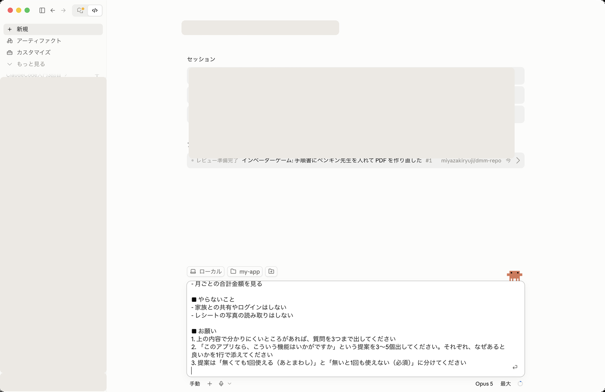
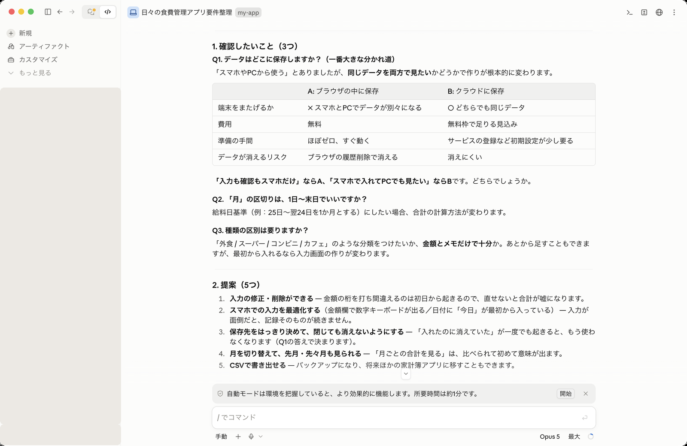
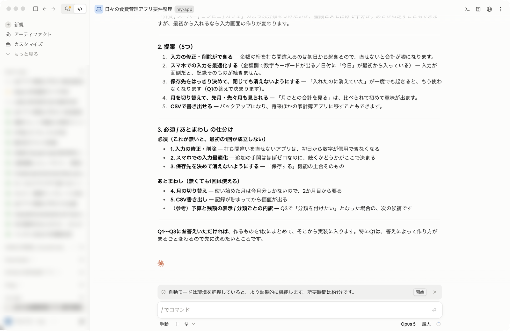
返ってきたら、自分で決める
- 質問には全部答えます。上の例では「保存先はどこか」「月の区切りはいつからいつまでか」「分類は要るか」が返ってきました。答えによって作りが変わる質問なので、ここで決めます
- 提案は、採用するものと、あとまわしにするものを自分で決めます。AI の仕分けは参考であって、決めるのは自分です
- あとまわしにしたものは、仕様書の「やらないこと」に「今回は作らない」として残します。上の例に出てくる CSV＝表の中身をカンマ区切りの文字で書き出したファイル（Excel などで開けます）で、これも「あとまわし」にしています
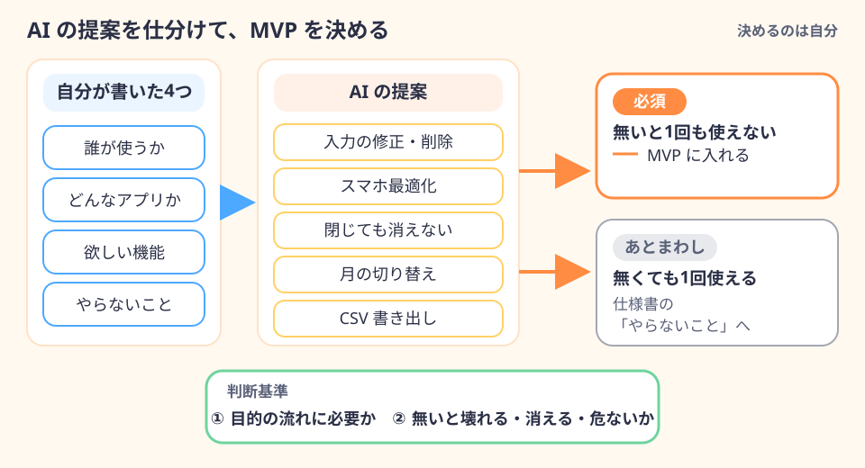
05
削って、決める：テーマ・MVP・型・画面
壁打ちで出てきた内容を、次の基準に当てて削り込みます。LIVE講義の中で、講師も一緒に1つずつ見ていきます。
良いテーマの3条件
1つでも外れるなら、テーマを変えるか、条件に合う形に寄せます。
| 条件 | なぜ |
|---|---|
| 自分が困っている（他人の困りごとではない） | 他人向けだと、仕様を決めるたびに相手に確認が要り、返事待ちで自分の進行が止まります |
| 週1回以上やっている作業 | 頻度が低いと作っても使いません。使わないものは、あとで機能を足すときに直す動機が湧きません |
| 正解を自分で判断できる | 出てきた結果が合っているかを自分で判定できないと、作り始めてからの「動作確認」が成立しません |
表は横にスクロールできます
業務データを扱う場合の確認
社外に出せない情報（業務の実データ・顧客の個人情報・秘密情報）を扱うテーマは、次の3つを守ってください。
- 1
開発中は、実データを入れない
架空のデータか、名前や金額を置き換えた（匿名化した）データで作ります。なぜ：Claude Code は自分の PC で動きますが、指示に必要なファイルの中身やエラー（＝プログラムが処理を続けられなくなったときに出す知らせ）の内容は AI のサービス（クラウド＝インターネット経由で使う、他社のコンピュータ上のサービス）に送られます。「自分の PC 内で動いているから外に出ない」とは言えません。
- 2
完成後のアプリのデータの保存先と、開発中に AI へ渡る情報は、別の話として確認する
あとで AI 機能を組み込むと、アプリが扱うデータもその場で AI サービスに送られるようになります。
- 3
業務で使うなら、所属先の AI 利用ルールを確認する
確認できないうちは、社外に出せない情報を含まない範囲で作ります。
なぜ最初に確認するのか：AI 機能を組み込む段になって気づくと、そこまで作ったものが使えなくなります。
MVP の考え方と削り方
- MVP（Minimum Viable Product の頭文字）＝1つの流れが最初から最後まで通る、いちばん小さい状態
- 残す基準は2つ。① 目的の流れを最初から最後まで通すのに必要か、② 無いと、間違った結果が出る・データが消える・危ない、のどれかが起きるか。どちらにも当てはまらない機能は「無くても1回使える」ので、今は要りません。AI に仕分けさせた「あとまわし」は、この基準で見直します（上の例で「入力の修正・削除」が必須になったのは ② に当たるためです）
- なぜ削るのか：機能を10個並べたまま作り始めると、どれも半分できた状態で7回が終わります
- この回の LIVE講義の中で削り切ります。「やらないこと」は仕様書の必須項目です
3類型への当てはめ
主たる型を1つ選びます（記録型／変換型／相談型）。両方の性格を持つ場合も主たる型を1つに決めます。なぜ：この先の解説を型ごとに進めるためです。型が決まらないと、自分がどの例を見ればよいか分からなくなります。
| 型 | 何をするアプリか | 例 |
|---|---|---|
| 記録型 | 入れて、ためて、見返す | 食費メモ・読書記録・体調メモ |
| 変換型 | 入れたものを別の形にして返す | 議事録の要約・文章の言い換え・表の整形 |
| 相談型 | 質問して、答えをもらう。やり取りが残る | 自分の資料だけを元に答える相談窓口 |
表は横にスクロールできます
使いやすい画面の4条件
| 条件 | なぜ |
|---|---|
| 1画面1目的 | 1つの画面でいくつものことをさせると、どこを押せばよいか迷います。画面を分けたほうが、Claude Code への指示も1画面ずつで済みます |
| 入力は最小 | 入力欄が多いと、記録そのものが続きません。無くても成り立つ欄は削ります |
| 今どこにいるか分かる | 画面の上に名前（「記録画面」「修正画面」）を出すだけで、迷わなくなります |
| 間違えても戻れる | 「キャンセル」や「削除前の確認」が無いと、1回の押し間違いでデータが消えます |
表は横にスクロールできます
次に描くワイヤーフレーム（＝画面の骨組みの図。すぐ下で説明します）を、この4つに当てて見直します。
AI に作らせる前に、人が画面構成を決める
なぜ人が先に決めるのか：決めずに「いい感じの画面を作って」と指示すると、AI は指示のたびに違う画面構成を作ります。作り直しのたびに前の画面が消え、いつまでも完成しません。
- ワイヤーフレーム（＝色や装飾を付けずに、どこに何を置くかだけを描いた画面の骨組み）を作ります。紙に手描き／Claude に箇条書きで出させる／Claude に画面遷移の図（どの画面からどの画面へ移るか）を出させる、のいずれかで構いません
- 専用ツール（Figma 等＝画面デザインを作るための Web サービス）は使いません。なぜ：操作を覚えるだけで、次の LIVE講義までの時間が終わってしまいます。必要なのは見た目の完成度ではなく、画面の数と役割が決まっていることです
- 3類型それぞれの画面構成の例：記録型＝一覧＋入力／変換型＝入力＋結果／相談型＝やり取り＋履歴
- 画面数の目安：MVP なら2〜4枚。5枚以上になった場合は MVP が大きすぎるので、戻って削ります
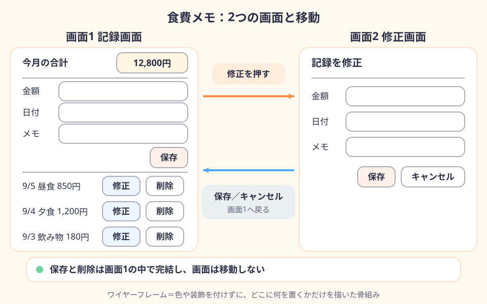
画面一覧を出させる指示の型です。壁打ちと同じセッションで続けて送って構いません。
次のアプリの画面一覧と画面遷移を、箇条書きで出してください。 画面ごとに「画面の名前／何をする画面か／置く要素（入力欄・ボタン・一覧など）」を書いてください。 アプリの目的：（毎日の食費をメモして、月ごとの合計を見る） やること（MVP）：（金額・日付・メモを保存する／一覧を新しい順に見る／今月の合計を見る／記録を修正・削除する） やらないこと：（家族との共有・ログイン・レシート読み取り・分類分け） 型：（記録型） 画面は2〜4枚に収めてください。装飾の話は不要です。まだコードは書かないでください。
06
使う技術を決める：技術スタックの提案をもらう
画面と MVP が決まったら、作る前に技術スタック（＝アプリを作るのに使うプログラミング言語や部品の組み合わせ）を Claude Code に提案してもらいます。 決めるのは自分ですが、候補を出して理由を並べるのは AI の得意な仕事です。
なぜ要件定義の段階で聞くのか
- 使う技術が決まらないまま作り始めると、仕様書の「使う技術」が空欄で、指示のたびに違う部品で作られます。あとで合わなくなります
- 何を作るか（画面の数・保存するデータ・AI 機能を足すかどうか）で向く技術が変わります。だから MVP と画面を決めたあとに聞きます。先に聞くと一般論しか返ってきません
- 提案の理由を読んでおくと、作り始めてからエラー（＝プログラムが処理を続けられなくなったときに出す知らせ）が出たとき「どの部品の話か」が分かります
技術スタックを提案させる指示の型
壁打ちと同じセッションで、そのまま貼って送ります。
ここまでで決めた内容（誰が使うか・やること・やらないこと・画面）をもとに、このアプリを作るのに使う技術スタック（＝プログラミング言語や部品の組み合わせ）を提案してください。 まだコードは書かないでください。 ■ 前提 - 作る人はプログラミング未経験で、Claude Code に指示して作ります - 自分のPCのブラウザで動かす、自分専用のWebアプリです（ログインは作りません） - Node.js はまだ入れていません - あとで AI の機能を1つ足す予定です - 部品はできるだけ少なく、エラーが出たときに原因を追いやすい構成にしたいです ■ お願い 1. おすすめの構成を1つ、「画面／保存の仕組み／動かし方」の3つに分けて提案してください。それぞれ、なぜそれを選ぶのかを1〜2行で添えてください 2. ほかの候補を2つまで挙げ、おすすめと比べて何が違うか（難しさ・できること）を1行ずつ書いてください 3. 初めて聞く人向けに、出てきた用語には一言の説明を付けてください 4. ファイルは作らず、コマンドも実行しないでください。仕様書への書き込みは、あとで別に指示します
なぜ「前提」を書くのか：前提が無いと、AI は世の中で多い構成（React＝画面を作るための大がかりな部品集、などの大きな部品の組み合わせ）を返してきます。未経験者が自分の PC で動かす、あとで AI 機能を足す、と書いておくと、それに合った小さい構成になります。
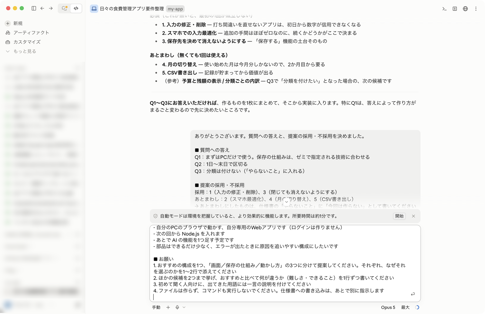
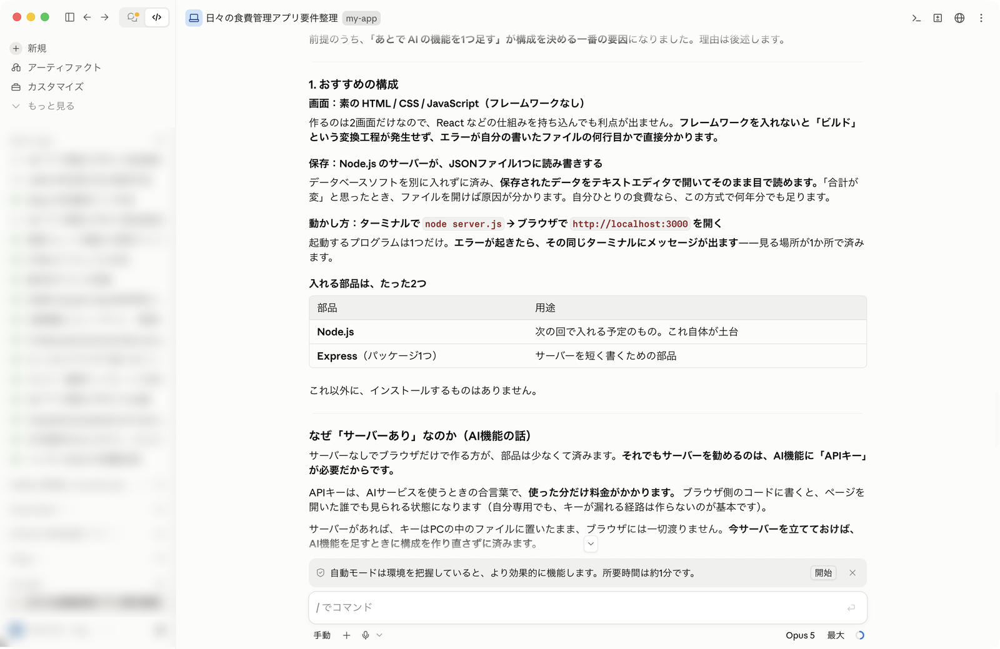
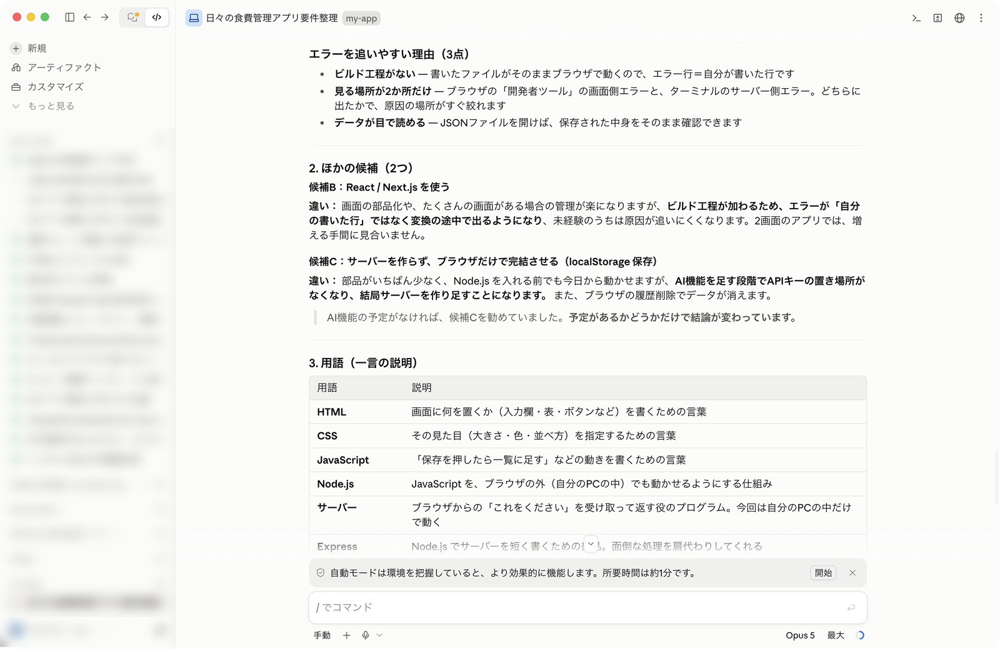
返ってきたら、自分で決める
- 提案は「おすすめ1つ＋ほかの候補」の形で返ってきます。上の例（食費メモ）では、画面＝素の HTML／CSS／JavaScript（HTML＝画面の骨組みを書く言語、CSS＝見た目を整える言語、JavaScript＝動きを付ける言語）、保存＝Node.js（＝JavaScript を自分の PC の上で動かすための土台のソフト）のサーバー（＝画面からの求めに応じてデータを返したり保存したりするプログラム）が JSON（＝データを決まった書き方の文字で保存する形式）のファイル1つに読み書き、動かし方＝ターミナル（＝文字で PC に命令する画面）で
node server.js→ ブラウザでhttp://localhost:3000（localhost＝自分の PC 自身を指す呼び名）、がおすすめになりました。「あとで AI 機能を足す」の前提が、サーバーあり・なしの分かれ目になっています - 全部を理解する必要はありません。「画面／保存／動かし方」の3つに、それぞれ何という名前の部品を使うかが分かれば十分です。用語の説明は返答の中の表にあります
- おすすめを採用するなら、そのまま次の節で仕様書の「使う技術」に書きます。ほかの候補を選ぶなら、理由を1行、自分の言葉にしておきます（あとで講師に相談するときに使います）
docs/spec.md の「使う技術」の欄だけを書き換えます（作り直しではありません）。
07
仕様書 docs/spec.md にまとめる
ここまでで決めたことを、Claude Code にファイルとして書かせます。書かせるのは Markdown（＝見出しや箇条書きを記号で書く、文章ファイルの書き方。ファイル名の最後が .md）の形式で、docs という名前のフォルダの中に spec.md というファイルを作ります（docs/spec.md はその置き場所を表す書き方です）。
仕様書に入れる6項目（このゼミでの型）
| 項目 | 抜けると何が起きるか |
|---|---|
| 目的（誰が・どこで使うか、ユーザーストーリーを含む） | 迷ったときに戻る基準が無くなります |
| やること（MVP） | 何ができたら完成か決まりません |
| やらないこと | AI は機能を足してきます。書いてあれば「やらないことに入っている」と止められます |
| 扱うデータ（項目名と種類） | あとから項目を足すと、すでに保存したデータに新しい項目が無い状態になり、一覧の表示が崩れます |
| 画面一覧と遷移 | 指示のたびに画面構成が変わります |
| 使う技術 | 指示のたびに違う部品で作られ、あとで合わなくなります。前の節で提案してもらった構成を「画面／保存の仕組み／動かし方」の3行で書きます |
表は横にスクロールできます
- ユーザーストーリー（＝使う場面を1文で書いたもの）：「〜のとき、〜したい。なぜなら〜だから。」を3〜5本、「目的」の中に入れます。「なぜなら」があると、あとで改善するとき何を優先するか自分で判断できます
- 置き場所と長さ：
docs/spec.md。各見出しの中身は箇条書きか表で、1見出しにつき8行まで（長いと、Claude Code に読ませるたびに要点がぼやけます） - なぜファイルとして置くのか：作り始めてからは、Claude Code に「
docs/spec.mdに従って作って」と指示できます。チャットに毎回貼り直す必要がなくなり、指示のたびに前提がずれることもなくなります
仕様書を書かせる指示の型
壁打ちの続きとして送ります。質問への答えと、提案の採用・不採用を自分の言葉で書いてください。
ありがとうございます。質問への答えと、提案の採用・不採用を決めました。 ■ 質問への答え（返ってきた質問の数だけ書く） （Q1：まずはPCだけで使う。保存の仕組みは、提案してもらった技術スタックに合わせる） （Q2：1日〜末日で区切る） （Q3：分類は付けない。「やらないこと」に入れる） ■ 提案の採用・不採用 採用：（入力の修正・削除／閉じても消えないようにする） あとまわし：（スマホ最適化／月の切り替え／CSV書き出し） → あとまわしにしたものは、仕様書の「やらないこと」に「今回は作らない」として書いてください ■ 画面（決めたもの） （画面1 記録画面：今月の合計・入力欄（金額・日付・メモ）・保存・一覧（各行に修正／削除）／画面2 修正画面：入力欄3つ・保存・キャンセル） ■ お願い この内容で、仕様書を docs/spec.md に Markdown で書いてください。 見出しは「目的／やること（MVP）／やらないこと／扱うデータ／画面一覧と遷移／使う技術」の6つ。 「目的」には、誰がどこで使うかと、ユーザーストーリー（「〜のとき、〜したい。なぜなら〜だから。」）を3〜5本入れてください。 扱うデータは「項目名・種類（文字・数値・日付など）・必須かどうか」の表にしてください。 画面は上で決めたとおりにし、見た目や装飾の話は書かないでください。 使う技術の欄は、さっき提案してもらった「おすすめの構成」を「画面／保存の仕組み／動かし方」の3行で書いてください。 各見出しの中身は8行まで。作成日・版番号は書かないでください。 変更するのは docs/spec.md の1ファイルだけ。すでにある場合は上書きせず、中身を見せて確認を待ってください。 決めていないことは推測で足さず、質問してください。コードは書かず、コマンドも実行しないでください。
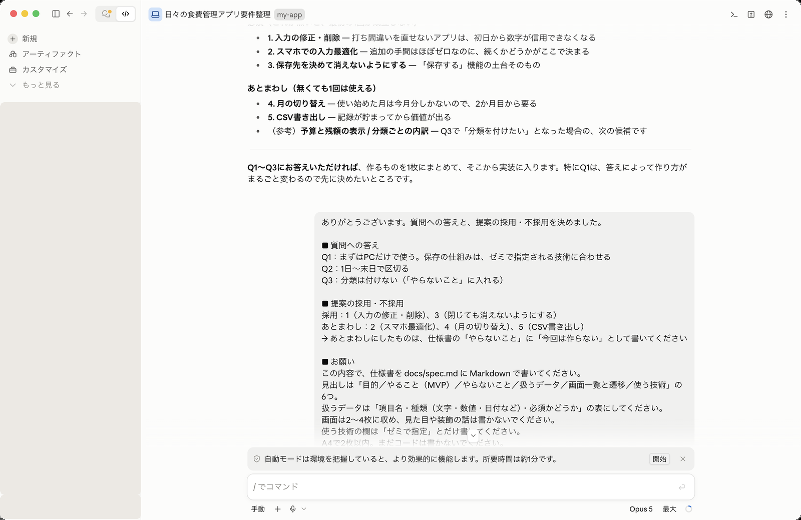
書き込みの確認画面が出ます
権限モードが「手動」なので、Claude Code はファイルを作る前に「spec.md の書き込みを許可しますか？」と聞いてきます。
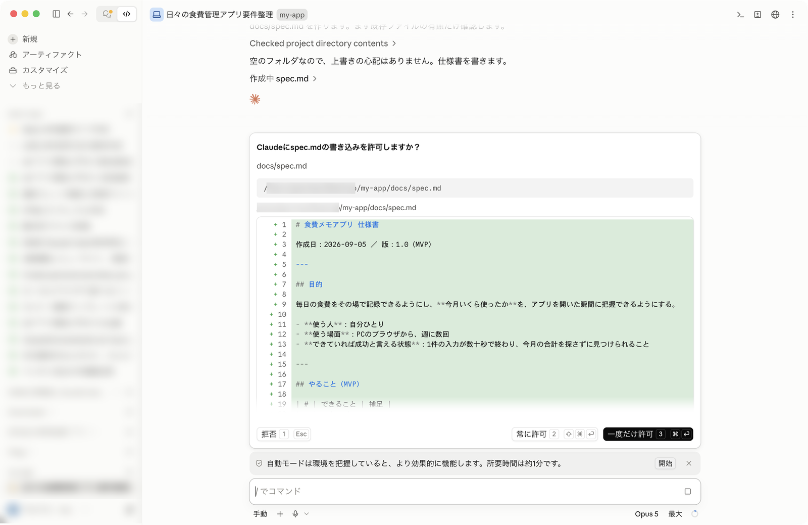
- 表示されたファイルの場所が
my-app/docs/spec.mdであること、中身が自分の決めた内容で始まっていることを見てから 「一度だけ許可」 を押します（ボタンの名前はアプリの更新で変わることがあります。1回だけ許可する意味のものを選んでください） - なぜ「常に許可」を今は選ばないのか：「常に許可」にすると、以後このフォルダのファイルは確認なしで書き換えられます。何が書き換えられるかを目で追う経験を先に積んでおくと、あとで確認を省く設定に切り替えたときも、危ない操作に気づけます
- なぜ「拒否」があるのか：場所や中身が違うときに止めるためです。止めたら、入力欄に「
docs/spec.mdではなく〜」のように指示を直して送り直します
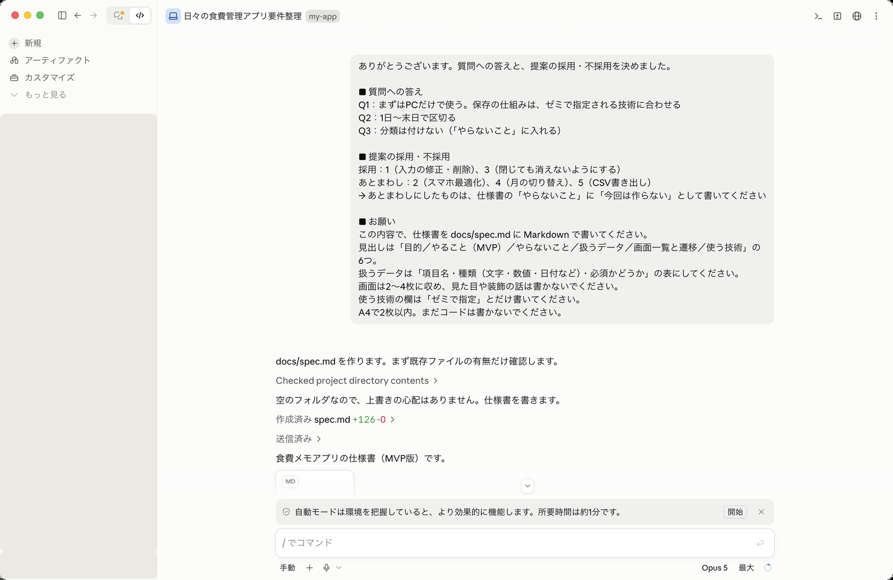
確認のしかた：できた docs/spec.md を開いて読み、1箇所以上は自分の判断で直してください（直した箇所は提出時に書きます）。
なぜ：AI の出力を読まずに通す癖がつくと、デバッグ（＝動かない原因を探して直す作業）のときに手が止まります。
上の例では、AI が「予算設定・グラフ」を「やらないこと」に勝手に足していました。要らなければ消す、残すなら自分が納得して残す、です。
spec.md の開き方と直し方
自分で直す
Finder／エクスプローラーで my-app → docs → spec.md をダブルクリックして開きます（Mac はテキストエディット、Windows はメモ帳で開けます。エディタ（VS Code など）が入っていればそれでも構いません）。直したら保存（Mac は ⌘S、Windows は Ctrl+S）して閉じます。もう一度開いて、直した箇所が残っていれば保存できています。
Claude Code に直させる
入力欄に「docs/spec.md の『やらないこと』から『予算設定・グラフ』の行を消してください」のように、直す内容を文で指示します。確認画面で変更箇所を見て「一度だけ許可」。自分で直したあとに Claude に続きを頼むときは「docs/spec.md を自分で直したので、読み直してください」と一言添えます。なぜ：Claude Code は前に読んだ内容を覚えているので、直したことを伝えないと古い内容で進めることがあります。
08
作る順番を決める：docs/tasks.md（タスク分け）
仕様書ができたら、どの順番で作るかを決めます。これをタスク分けと呼び（タスク＝1回の指示で作る作業の単位）、docs/tasks.md に残します。
作り始めたら、この順番の上から1つずつ Claude Code に指示していきます。
なぜタスクに分けるのか
- 仕様書をまるごと渡して「作って」と言うと、一度に全部ができあがり、どこが指示と違うのか判断できなくなります（「一度に全部言わない」の土台です）
- 1つずつ作れば、どこまでできたかが目に見えます。詰まったとき、直前のタスクまでは動いていたと分かるので、原因を探す範囲が狭くなります
- 順番を先に決めておくと、「次に何を指示するか」で毎回迷いません
良いタスクの3条件
| 条件 | なぜ |
|---|---|
| 1回の指示で作れる大きさ | 大きいと、途中でずれても気づけません |
| ブラウザで動作確認できる | 目で見て確かめられないタスクは、できたかどうか自分で判断できません |
| 「終わったと言える条件」が1行で書ける | 完了の基準が無いと、いつまでも「もう少し」が続きます |
表は横にスクロールできます
タスク分けをさせる指示の型
docs/spec.md ができました。次に、このアプリをどういう順番で作っていくか、タスク分けをしてください。 まだコードは書かないでください。 ■ お願い - docs/spec.md を読んで、作る順番にタスクを並べ、docs/tasks.md に書いてください - 1つのタスクは「1回の指示で作れて、ブラウザで動作確認できる大きさ」にしてください - 各タスクに「終わったと言える条件（ブラウザで何が確認できれば完了か）」を1行で書いてください - 順番の理由（なぜそのタスクが先か）を1行ずつ添えてください - タスクは10個以内。多いときは「必須」と「余裕があれば」に分けてください。チェックボックス形式（- [ ]）で書いてください - 変更するのは docs/tasks.md の1ファイルだけ。すでにある場合は上書きせず、中身を見せて確認を待ってください。作成日・版番号は書かないでください
チェックボックス形式＝行の先頭に - [ ] と書く Markdown の書き方です。終わったタスクを - [x] に変えると、どこまで進んだかが一目で分かります。
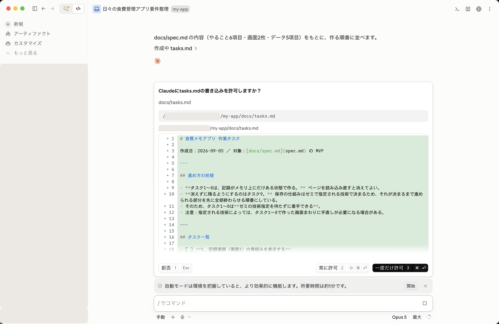
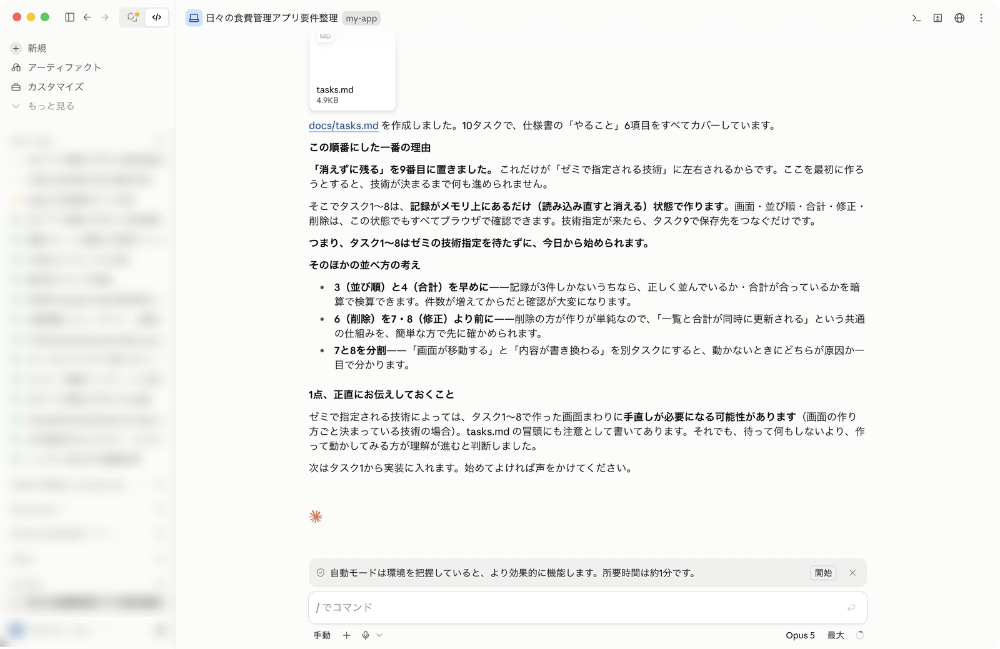
出てきた順番を読む
上の例（食費メモ）では、AI は次の順番にしました。
- 記録画面（画面1）の骨組みを表示する
- 記録を1件保存して一覧に表示する（読み込み直すと消えてよい）
- 一覧を新しい順に並べる
- 今月の合計金額を計算して表示する
- 入力の間違いを弾く
- 記録を削除する
- 修正画面（画面2）へ移動して戻る
- 修正した内容を保存する
- 記録が消えずに残るようにする（保存先を仕様書の「使う技術」につなぐ）
- 仕様書の「やること」6項目を通しで確認する
この例では10個になりました。それぞれに「完了条件」と「なぜ先か」が1行ずつ付いています。
読むときに見る点は次の3つです。
- 最初のタスクが「画面が1枚出る」になっているか。動く画面が先にあると、以降のタスクをすべてその画面の上で確認できます
- 「消えないようにする」が後ろにあるか。この例のタスク2「1件保存して一覧に出す」の保存は、画面の上に出すだけで、ページを読み込み直すと消えてよいものです。ブラウザを閉じても残るようにするのはタスク9で、そこだけが仕様書の「使う技術」（保存の仕組み）に左右されます。だから技術に左右されないタスクを先に集めてあります。理由が書いてあれば、順番に納得できます
- 「使う技術」を書き換えたら見直します。ゼミ共通の構成が案内されて仕様書の「使う技術」を書き換えた場合は、
docs/tasks.mdを Claude Code に読み直させ、順番や分け方を直します。作り直しではなく、順番の確認です - 各タスクに完了条件があるか。「金額を空にして保存を押すとエラーが出る」のように、ブラウザで何を見ればよいかが書いてあるかを見ます
Deliverables
この回で作るもの
終わったとき、手元に次の3つがある状態にします。この回の課題の内容は commmune（＝DMM 生成AI CAMP の受講生向けコミュニティサイト）のゼミスレッドでご案内し、提出は「ゼミ参加者向け 事前課題提出受付フォーム」から開催3日前までにお願いします（Home の「ゼミのルール・修了要件」）。この回から 演習サイト Boarding Pass の理解度チェックもあります。
アプリのフォルダ
デスクトップに、半角英数字の名前で（例：my-app）。Claude デスクトップアプリで開けている状態。
docs/spec.md（仕様書）
6項目（目的／やること／やらないこと／扱うデータ／画面一覧と遷移／使う技術）。自分で1箇所以上直したもの。
docs/tasks.md（作る順番）
10個以内のタスク。それぞれに「終わったと言える条件」と順番の理由。自分で1箇所直したもの。
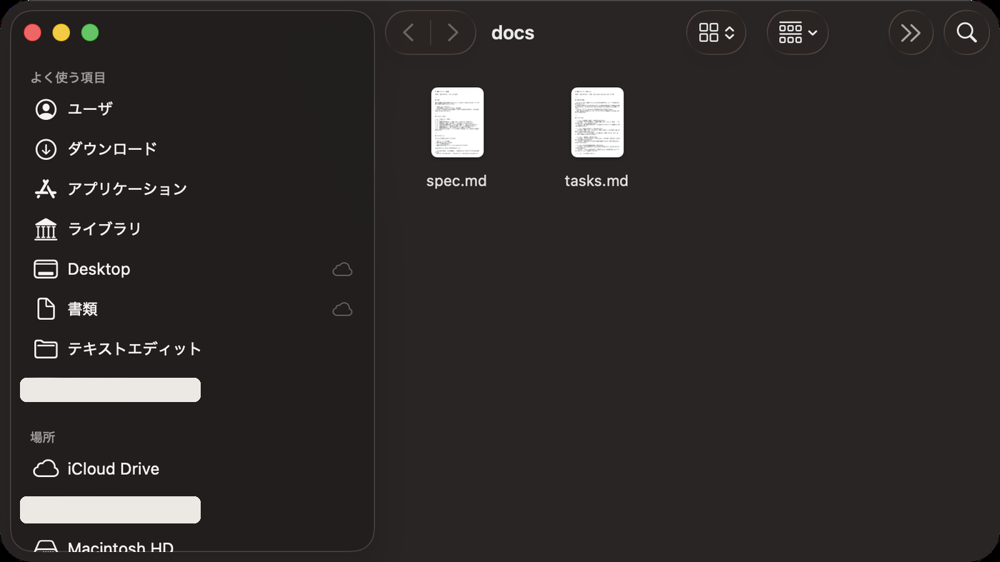
Pitfalls
よくあるつまずきと対処
詰まったら、Home の「分からないことが出てきたらこの順番で」の順（スクショを撮って AI に聞く → ゼミ掲示板）で進めてください。
フォルダの名前に日本語やスペースを使った
作り始めてから、道具の一部がエラーを出します。
対処：Finder／エクスプローラーで、半角英数字とハイフンの名前に変えるだけで直ります。作り直す必要はありません。
別のフォルダを開いたまま指示した
関係ないフォルダにファイルができたり、書き換えられたりします。
対処：画面の下のフォルダ名を毎回見る。違っていたら「フォルダを開く…」で開き直します。
壁打ちの途中で AI がコードを書き始めた
要件が固まる前に骨組みができ、あとで作り直しになります。
対処：指示の先頭に「まだコードは書かないでください」を入れる。書き始めたら確認画面で「拒否」を押して、決める作業に戻します。
AI の提案を全部採用してしまった
MVP が膨らみ、7回で終わらなくなります。
対処：「無くても1回使えるか」で仕分け直す。あとまわしは「やらないこと（今回は）」に残します。
画面が5枚以上になった
画面が作り終わりません。
対処：MVP が大きすぎるサインです。「やること」に戻って削ります（目安2〜4枚）。
書き込みの確認画面で止まってしまった
先に進めません。
対処：場所と中身を見て「一度だけ許可」。何を聞かれているか分からないときは、確認画面のスクショを撮ってゼミ掲示板へ。
技術スタックの提案を全部理解しようとして止まった
用語を調べ始めて、仕様書まで進みません。
対処：「画面／保存／動かし方」の3つに使う部品の名前だけ押さえる。用語の意味は返答の表で足ります。分からない言葉は、実物を見てからで大丈夫です。
Claude デスクトップアプリが入っていない／有料プランが未契約
フォルダを開くところから先に進めません。
対処：LIVE講義では講師の画面で流れを見て、あとからご自身のPCで同じ手順を追ってください。導入で詰まったら、スクショを撮って AI に聞く → ゼミ掲示板の順で。
Glossary
この回で出てきた用語
| 用語 | 意味 |
|---|---|
| 要件定義 | 作り始める前に「誰が使うか・何を作るか・何を作らないか・どんなデータと画面を持つか」を文章で決めること。決まった書式は無い |
| フォルダ（アプリのフォルダ） | そのアプリのファイルをすべて入れる入れ物。アプリ1つにつき1つ作る |
| docs | documents（文書）の略。仕様書や作る順番など、文書を入れるフォルダの名前。docs/spec.md は「docs フォルダの中の spec.md」の意味 |
| app | application（アプリケーション）の略。画面や処理のプログラムを入れるフォルダの名前。この回ではまだ作らない |
| spec ／ tasks | spec＝specification（仕様）の略。tasks＝作業の一覧。それぞれ仕様書 spec.md、作る順番 tasks.md のファイル名に使う |
| 壁打ち | 自分の考えを AI に読ませて、質問や提案を返してもらい、それを見て自分の考えを整えるやり取り |
| セッション | Claude Code との1つの会話のまとまり。「＋ 新規」で新しく始める |
| 権限モード | Claude Code がファイルの書き換えやコマンドの実行をする前に、確認を求めるかどうかの設定。「手動」はそうした操作の前に確認画面が出る |
| MVP | 1つの流れが最初から最後まで通る、いちばん小さい状態 |
| ワイヤーフレーム | 色や装飾を付けずに、どこに何を置くかだけを描いた画面の骨組み |
| 画面遷移 | どの画面からどの画面へ移るかのつながり |
| ユーザーストーリー | 「〜のとき、〜したい。なぜなら〜だから。」の形で書く、使う場面の記述 |
| 仕様書（docs/spec.md） | 6項目を書いた文章ファイル。Claude Code に読ませる前提で置く |
| タスク分け（docs/tasks.md） | 仕様書の内容を、作る順番に並べた作業の一覧。1つずつ Claude Code に指示する |
| Markdown | 見出しや箇条書きを記号で書く、文章ファイルの書き方（.md） |
| プロンプト | AI に送る指示の文章。このページで「指示の型」として配っているのは、その雛形 |
| 技術スタック | アプリを作るのに使うプログラミング言語や部品の組み合わせ。この回で Claude Code に提案してもらい、仕様書の「使う技術」に書く |
表は横にスクロールできます